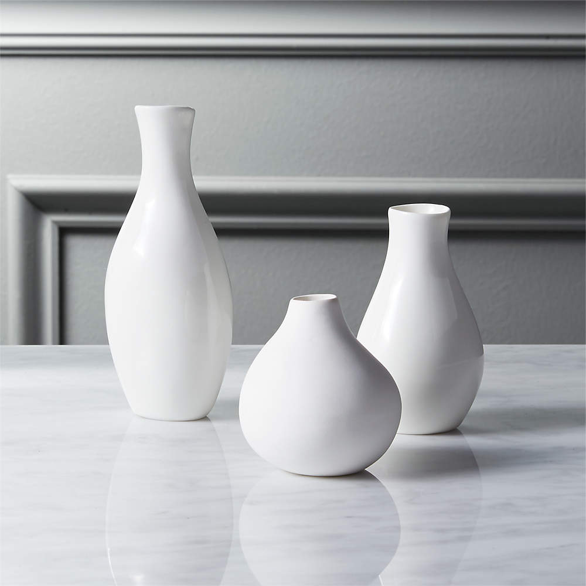
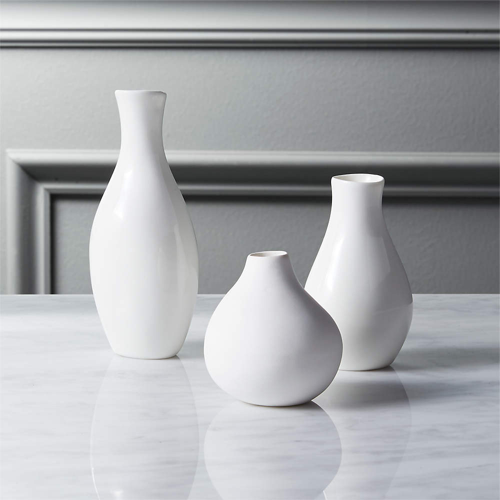

Политика конфиденциальности/
-
Определения
1. Продавец / Оператор — ИП Иванова Н.В. (ИНН 504106873895, адрес местонахождения: 105062, г. Москва, ул. Покровка, 31с2, кв. 35 ком. 4). 2. Интернет-магазин — Интернет-сайт Yellow Line Shop, расположенный в сети интернет по адресу: www.yellowline.shop (далее — Сайт), принадлежащий Продавцу, где представлены товары, предлагаемые Продавцом для приобретения, а также условия оплаты и доставки и возвратов товаров. 3. Субъекты персональных данных: Посетитель Интернет-магазина Yellow Line Shop — физическое лицо, посетившее Cайт без цели заключения договора купли-продажи; Пользователь — физическое лицо, посетитель Интернет-магазина Yellow Line Shop, принимающий условия публичной оферты, размещенной в интернет-магазине Yellow Line Shop и желающий разместить заказ в Интернет-магазине Yellow Line Shop; Покупатель — пользователь, разместивший заказ в Интернет-магазине Yellow Line Shop. 4. Персональные данные — информация, сохраненная в любом формате, относящаяся к определенному или определяемому на основании такой информации физическому лицу (субъекту персональных данных), которая сама по себе или в сочетании с другой информацией, имеющейся в распоряжении Интернет-магазина Yellow Line Shop, позволяет идентифицировать личность субъекта персональных данных. 5. Обработка персональных данных — действия (операции) с персональными данными, включая сбор, запись, систематизацию, накопление, хранение, уточнение (обновление, изменение), извлечение, использование, распространение (в том числе передачу), обезличивание, блокирование, уничтожение персональных данных. 6. Распространение персональных данных — действия, направленные на передачу персональных данных определенному кругу лиц (передача персональных данных) или на ознакомление с персональными данными неограниченного круга лиц, в том числе обнародование персональных данных в средствах массовой информации, размещение в информационно- телекоммуникационных сетях или предоставление доступа к персональным данным каким-либо иным способом. 7. Использование персональных данных — действия (операции) с персональными данными, совершаемые оператором в целях принятия решений или совершения иных действий, порождающих юридические последствия в отношении субъекта персональных данных или других лиц либо иным образом затрагивающих права и свободы субъекта персональных данных или других лиц. -
Общие положения
1. Политика в отношении обработки и защиты персональных данных (далее — Политика) разработана ИП Иванова Н.В. (ИНН 504106873895, адрес местонахождения: 105062, г. Москва, ул. Покровка, 31с2, кв. 35 ком. 4) — Оператором в соответствии с Федеральным законом от 27.07.2006 г. №152-ФЗ «О персональных данных» (далее — Закон) и другими нормативными правовыми актами в области персональных данных. 2. Политика определяет порядок обработки и защиты персональных данных Пользователей или Покупателей при продаже им товаров в Интернет-магазине Yellow Line Shop на Сайте. 3. Целью настоящей Политики является обеспечение защиты прав и свобод человека и гражданина при обработке его персональных данных, в том числе защиты прав на неприкосновенность частной жизни, личную и семейную тайну, четкое и неукоснительное соблюдение требований законодательства РФ в области персональных данных. 4. Действие Политики распространяется на все персональные данные субъектов, обрабатываемые Оператором с применением средств автоматизации и без применения таких средств. 5. Оператор публикует Политику на Сайте по адресу: www.yellowline.shop, а также предоставляет неограниченный доступ к ней любому лицу, лично обратившемуся к Оператору. 6. Оператор вправе вносить изменения в Политику по мере необходимости. Обязательный пересмотр Политики проводится в случае существенных изменений международного или национального законодательства в сфере персональных данных. -
Цели обработки персональных данных
1. Политика в отношении обработки и защиты персональных данных (далее — Политика) разработана ИП Иванова Н.В. (ИНН 504106873895, адрес местонахождения: 105062, г. Москва, ул. Покровка, 31с2, кв. 35 ком. 4) — Оператором в соответствии с Федеральным законом от 27.07.2006 г. №152-ФЗ «О персональных данных» (далее — Закон) и другими нормативными правовыми актами в области персональных данных. 2. Политика определяет порядок обработки и защиты персональных данных Пользователей или Покупателей при продаже им товаров в Интернет-магазине Yellow Line Shop на Сайте. 3. Целью настоящей Политики является обеспечение защиты прав и свобод человека и гражданина при обработке его персональных данных, в том числе защиты прав на неприкосновенность частной жизни, личную и семейную тайну, четкое и неукоснительное соблюдение требований законодательства РФ в области персональных данных. 4. Действие Политики распространяется на все персональные данные субъектов, обрабатываемые Оператором с применением средств автоматизации и без применения таких средств. 5. Оператор публикует Политику на Сайте по адресу: www.yellowline.shop, а также предоставляет неограниченный доступ к ней любому лицу, лично обратившемуся к Оператору. 6. Оператор вправе вносить изменения в Политику по мере необходимости. Обязательный пересмотр Политики проводится в случае существенных изменений международного или национального законодательства в сфере персональных данных. ИНТЕРНЕТ-МАГАЗИН СОБИРАЕТ ДАННЫЕ ТОЛЬКО В ОБЪЕМЕ, НЕОБХОДИМОМ ДЛЯ ДОСТИЖЕНИЯ НАЗВАННОЙ ЦЕЛИ Персональные данные Пользователя: 1. Общие персональные данные: имя, фамилия, номер телефона, адрес электронной почты. 2. Информация, предоставляемая Пользователем самостоятельно при регистрации в личном кабинете в Интернет-магазине Yellow Line Shop, при оформлении заказа, оплате и оформлении доставки в Интернет-магазине Yellow Line Shop или в процессе использования Сайта. Иная информация, обрабатываемая Оператором: 1. Данные о технических средствах (устройствах): IP-адрес хоста, вид операционной системы, тип браузера, географическое положение, данные о поставщике услуг интернета; 2. Сведения о посещаемых страницах Сайта; 3. Информация, автоматически получаемая при доступе к Сайту с использованием закладок (cookies); 4. Информация, полученная в результате действий Пользователя на Сайте, в том числе следующие сведения: об оформлении заявки, об адресе доставки, о получателе товара, о направленных комментариях, отзывах и вопросах. -
Принципы обработки персональных данных
Действия Оператора осуществляются на основе следующих принципов: 1. Обработка персональных данных осуществляется в соответствии с требованиями и нормами законодательства РФ. 2. Обработка персональных данных осуществляется в соответствии с конкретными, заранее определенными и законными целями. 3. Недопущение объединения баз данных, содержащих персональные данные, обработка которых осуществляется в целях, несовместимых между собой. 4. Соответствие содержания и объема персональных данных заявленным целям обработки. 5. Точность, достаточность, актуальность и достоверность персональных данных. 6. Законность технических мер, направленных на обработку персональных данных. 7. Разумность и целесообразность обработки персональных данных. 8. Хранение персональных данных не дольше, чем того требуют цели их обработки или в течение срока согласия Пользователя. 9. Обрабатываемые персональные данные подлежат уничтожению либо обезличиванию после достижения целей обработки; в случае утраты необходимости их достижения. -
Обработка персональных данных
1. СБОР ПЕРСОНАЛЬНЫХ ДАННЫХ Сбор персональных данных осуществляется следующими способами: — предоставление персональных данных Пользователем при заполнении веб-форм на Сайте; — автоматический сбор информации о Пользователе с помощью технологий и сервисов: веб-протоколы, файлов "cookie", веб-отметки, которые запускаются только при вводе Пользователем своих данных. 2. ХРАНЕНИЕ ПЕРСОНАЛЬНЫХ ДАННЫХ — персональные данные Пользователя хранятся исключительно на электронных носителях и обрабатываются с использованием автоматизированных систем, за исключением случаев, когда неавтоматизированная обработка персональных данных необходима в связи с исполнением требований законодательства РФ или для исполнения договора купли-продажи между Продавцом и Покупателем; — Оператор при обработке персональных данных Пользователя обеспечивает использование баз данных, находящихся на территории Российской Федерации. -
Использование и передача персональных данных
Использование персональных данных Пользователей осуществляется для достижения целей, определенных условиями продажи — публичной офертой между Покупателем и Интернет-магазином Yellow Line Shop. При передаче персональных данных Покупателей и Пользователей Интернет-магазин Yellow Line Shop соблюдает следующие требования: 1. Предупреждает лиц, получающих персональные данные о том, что эти данные могут быть использованы лишь в целях, для которых они сообщены, и требует от этих лиц подтверждения того, что это правило соблюдено. Лица, получающие персональные данные покупателей и посетителей, обязаны соблюдать режим конфиденциальности. Данное положение не распространяется в случае обезличивания персональных данных и в отношении общедоступных данных. 2. Интернет-магазин Yellow Line Shop вправе предоставлять или передавать персональные данные Покупателей и Посетителей третьим лицам для целей выполнения обязательств перед покупателями для достижения целей, определенных условиями продажи — публичной офертой между покупателем и Интернет-магазином Yellow Line Shop, для передачи заказов в доставку и доставки товаров Покупателю или Пользователю, для осуществления рассылок рекламного и информационного характера, содержащих информацию о скидках, предстоящих и действующих акциях и других мероприятиях в Интернет-магазине Yellow Line Shop. 3. Пользователь или Покупатель выразил согласие на такие действия путем принятия (акцепта) условий продажи — Публичной оферты между Покупателем и Интернет-магазином Yellow Line Shop, частью которой является настоящая Политика. 4. Передача необходима для использования Пользователем или Покупателем определенного сервиса либо для исполнения определенного соглашения или договора с покупателем, в том числе договора купли-продажи товара, перевозки товара, доставки товара. Для этих целей персональные данные могут быть переданы Продавцом курьерским и транспортным компаниям, осуществляющим доставку товара; 5. Передача необходима для функционирования и работоспособности самого Сайта; 6. если раскрытие этой информации требуется для соблюдения закона, исполнения судебного акта; 7. Для оказания содействия в проведении расследований, осуществляемых правоохранительными или иными государственными органами; 8. Для защиты прав и законных интересов покупателя или пользователя и Интернет-магазина Yellow Line Shop. -
Уничтожение персональных данных
Оператор уничтожает персональные данные Пользователя в следующих случаях: — Наличие угрозы безопасности Сайта; — Истечение срока хранения персональных данных; — По запросу Пользователя. -
Согласие на обработку персональных данных
1. Пользователь принимает решение о предоставлении Оператору своих персональных данных свободно, своей волей и в своем интересе. 2. Используя Сайт Оператора и иные интернет- ресурсы, предоставляя свои персональные данные в веб-формах на Сайте или на иных интернет-ресурсах Интернет-магазина Yellow Line Shop и проставляя согласие в чек-боксе с формулировками «Я принимаю условия Пользовательского соглашения Интернет-магазина Yellow Line Shop и Политики в отношении обработки и защиты персональных данных» и/или «даю согласие на обработку персональных данных», Пользователь выражает свое согласие и дает разрешение на обработку своих персональных данных в порядке, предусмотренном Политикой. 3. Согласие на обработку персональных данных может быть отозвано субъектом персональных данных в порядке, предусмотренном разделом 14 Политики. -
Права судъекта персональных данных
1. Пользователь имеет право на получение информации об обработке персональных данных, в том числе содержащей: — подтверждение факта обработки персональных данных; — правовые основания обработки персональных данных; — цели и применяемые Оператором способы обработки персональных данных; — обрабатываемые персональные данные, относящиеся к соответствующему Субъекту персональных данных, источник их получения, если иной порядок представления таких данных не предусмотрен законодательством Российской Федерации; — сроки обработки персональных данных, в том числе сроки их хранения; — порядок осуществления прав, предусмотренных законодательством Российской Федерации; — информацию об осуществленной или о предполагаемой трансграничной передаче данных; — сведения о лицах, которым могут быть раскрыты персональные данные на основании договора с Оператором или в соответствии с законодательством Российской Федерации; — наименование или фамилию, имя, отчество и адрес лица, осуществляющего обработку персональных данных по поручению Оператора, если обработка поручена или будет поручена такому лицу; — иные сведения, предусмотренные законодательством Российской Федерации. 2. Пользователь вправе получать сведения, указанные в ч. 1 п. 9. Политики, неограниченное количество раз, направив Оператору соответствующий запрос в порядке, предусмотренном действующим законодательством. -
Обязанности оператора
В соответствии с требованиями Закона Оператор обязан: — предоставлять по запросу Пользователя информацию об обработке его персональных данных, указанную в п. 9 Политики, или обоснованный отказ; — принимать меры, необходимые и достаточные для обеспечения выполнения обязанностей, предусмотренных Законом; — по требованию Пользователя уточнять обрабатываемые персональные данные, блокировать или удалять, если они являются неполными, устаревшими, неточными, незаконно полученными или ненужными для заявленной цели обработки; — обеспечить правомерность обработки персональных данных. В случае, если обеспечить правомерность обработки персональных данных невозможно, Оператор в срок, не превышающий 10 (десять) рабочих дней с даты выявления неправомерной обработки персональных данных, обязан уничтожить или обеспечить их уничтожение; — в случае отзыва Пользователем согласия на обработку персональных данных прекратить их обработку и уничтожить в срок, не превышающий 30 (тридцать) дней с даты поступления указанного отзыва, за исключением случаев, когда обработка может быть продолжена в соответствии с законодательством РФ. -
Сведения о реализуемых требованиях к защите персональных данных
1. Защита персональных данных, обрабатываемых Оператором, обеспечивается реализацией правовых, организационных и технических мер, необходимых и достаточных для обеспечения требований законодательства в области защиты персональных данных. 2. Правовые меры включают в себя: — разработку локальных актов Оператора, реализующих требования российского законодательства, в том числе – Политики в отношении обработки и защиты персональных данных, и размещение ее на Сайте; — отказ от любых способов обработки персональных данных, не соответствующих целям, заранее предопределенным Оператором. 3. Организационные меры включают в себя: — назначение лица, ответственного за организацию обработки персональных данных; — ограничение состава работников Оператора, имеющих доступ к персональным данным; — ознакомление работников Оператора с положениями законодательства Российской Федерации о персональных данных, в том числе с требованиями к защите персональных данных, с локальными актами Оператора по вопросам обработки персональных данных, обучение указанных работников. -
Ограничение действия политики
1. Действие Политики распространяется исключительно на Сайт Yellow Line Shop и не применяется к другим ресурсам. 2. Пользователь обязан разумно и ответственно подходить к размещению собственных персональных данных на Сайте в открытом доступе, в том числе при оставлении отзыва. 3. Оператор не несет ответственности за действия третьих лиц, получивших доступ к персональным данным Пользователя не по вине Оператора. -
Обращения пользователя
1. Пользователь вправе направлять Оператору свои запросы, в том числе запросы относительно использования их персональных данных: — по телефону +7 (916) 912-90-88; — в форме электронного документа по адресу электронной почты: hello@yellowline.studio; — запрос должен содержать следующую информацию: 1. Номер основного документа, удостоверяющего личность Пользователя; 2. Сведения о дате выдачи указанного документа и выдавшем его органе; 3. Сведения, подтверждающие участие Пользователя в отношениях с Оператором; 4. Подпись Пользователя. 2. Оператор обязуется рассмотреть и направить ответ на поступивший запрос в течение 30 (тридцати) дней с момента поступления обращения. -
Контактная информация и реквизиты для обращений относительно использования их персональных данных
Адрес местонахождения: 105062, г. Москва, ул. Покровка, 31с2, кв. 35 ком. 4; E-mail: hello@yellowline.studio